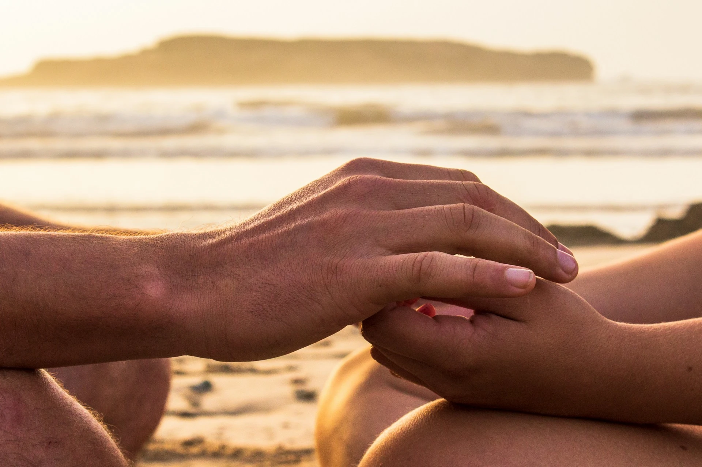
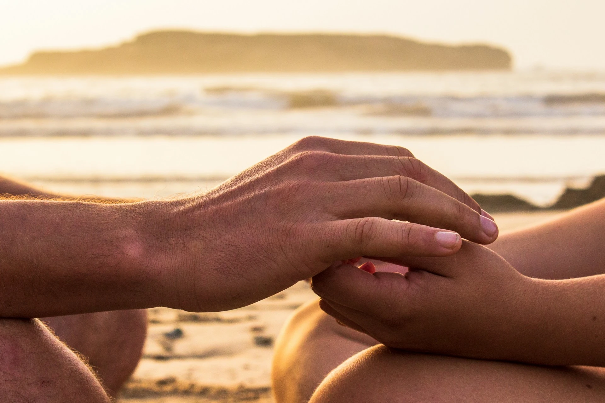

A propos de moi
Bénédicte Manin
Après plusieurs années à exercer une activité professionnelle diversifiée mais pas assez épanouissante, un déséquilibre dans ma santé s’est installé. J’ai compris que notre équilibre de vie naît d’une attention globale sur tous les plans : physique, psychique, émotionnelle.
Dès mon enfance, j’ai naturellement appris à vivre avec le cycle des saisons et des plantes. Convaincue par les remèdes et les bienfaits naturels, la naturopathie s’est imposée à moi. Elle m’a appris à améliorer mon état de santé de façon naturelle, à me connaitre et écouter l’ensemble de mes besoins pour retrouver vitalité et harmonie.
Nous sommes acteurs de notre santé et notre bien-être, mais parfois le corps a besoin d’un coup de pouce et de direction.
Mon objectif est de vous aider à retrouver ou optimiser votre vitalité, à vous engager dans votre prévention santé et à vous reconnecter à votre propre potentiel d’autoguérison.
Je souhaite être à vos cotés dans votre démarche de santé et de mieux-être par un accompagnement personnalisé.
Je vous accueille dans un environnement chaleureux à Chonas l’Amballan (12 mn de Vienne), à Condrieu, ou en visio.
Naturophatie
Elle s’intéresse à la personne dans sa globalité, dans ses dimensions physique, psychique, émotionnelle, énergétique.
Elle vise à préserver et optimiser votre santé globale, votre qualité de vie en harmonie avec votre environnement.
Par santé, il faut entendre « état de complet bien-être physique, mental et social » et pas seulement une absence de maladie.
Mon accompagnement
La réflexologie plantaire
« Là où se trouvent les pieds, commence le voyage » – Lao Tseu
La réflexologie plantaire est une technique de massage millénaire qui procure un moment de profonde relaxation et de mieux-être de la personne. C’est une méthode douce et naturelle adaptée à tous.
Des pressions sur des zones réflexes du pied agissent sur le corps dans le but de dénouer des tensions, relancer la force vitale, soutenir les capacités d’auto-restauration, améliorer la qualité du sommeil, renforcer la circulation d’énergie.
La séance commence par un échange verbal afin d’établir votre état de santé et d’écarter d’éventuelles contre-indications.
Selon vos besoins d’entretien et de prévention et selon votre organisme il est préconisé d’effectuer une séance par mois ou à chaque changement de saison.
Pour des troubles fonctionnels anciens ou bien installés, il est préconisé de réaliser 3 à 5 séances espacées de 10 jours à 3 semaines.
Mentions légales: le réflexologue ne pose aucun diagnostic médical, n’intervient dans aucune décision thérapeutique, et ne se substitue en aucun cas à une consultation ou traitement médical.
Les fleurs de Bach

Un voyage au cœur de soi
Les fleurs de Bach sont des élixirs floraux naturels. Le Dr Edouard Bach, médecin anglais, convaincu de l’impact des émotions sur la santé, élabore 38 élixirs floraux qui nous invitent à reprendre contact avec nos états émotionnels gênants, figés, difficiles, pour les accueillir, les apprivoiser, et cheminer vers une harmonie intérieure.
Pour qui ?
Pour tous ceux à la recherche d’un équilibre émotionnel, c’est une méthode douce et naturelle adaptée à tous.
Pourquoi ?
Pour nous aider à harmoniser nos états émotionnels tels que la peur, les chocs émotionnels, les incertitudes, les doutes, le découragement, la tristesse, la colère, le manque de confiance, l’impatience…
Le massage relaxant californien
Le massage relaxant allie des gestes doux et fluides à des mouvements amples et fermes sur l’ensemble du corps. Les bienfaits sont immédiats.
Ce soin vous propose de vous abandonner à une relaxation totale pour faire place à une détente du corps et de l’esprit, une sensation de bien-être, un apaisement et un soulagement des tensions physiques et émotionnelles du quotidien.
Il vous invite à rester attentif à votre corps en même temps que de s’installer dans un profond abandon pour vivre une parenthèse de douceur et plonger dans une bulle de sérénité.
En naturopathie, il agit en prévention et en hygiénisme pour une meilleure vitalité, un ressourcement, une reconnexion à soi.
Mentions légales: le massage relaxant ne pose aucun diagnostic médical, n’intervient dans aucune décision thérapeutique, et ne se substitue en aucun cas à une consultation ou traitement médical.
Le drainage lymphatique manuel

Le drainage lymphatique manuel est une technique de massage
doux visant à stimuler la circulation de la lymphe et évacuer les toxines de l’organisme.
La lymphe, chargée de combattre les infections et nettoyer notre organisme, circule par un réseau de vaisseaux et ganglions dans tout notre corps.
Comment se pratique le drainage ?
Une combinaison de mouvements lents et rythmés effectués avec les doigts et la paume de la main se font sur l’ensemble du corps. C’est un réel moment de détente et relaxation.
Les bienfaits
Stimulation de la circulation lymphatique, amélioration du système digestif, renforcement du système immunitaire, soulagement des jambes lourdes, diminution des douleurs chroniques.
Il peut être réalisé sous forme de cure ou à chaque changement de saison.
Mentions légales: le drainage lymphatique ne pose aucun diagnostic médical, n’intervient dans aucune décision thérapeutique, et ne se substitue en aucun cas à une consultation ou traitement médical.
Prestations/Tarifs
Réflexologie plantaire
Séance 1h - 60 €
Séance 45 mn – 45 €
Forfait 3 séances de 1h – 165 €
Massage relaxant californien
Massage 1h – 70 €
Drainage lymphatique manuel
Drainage 1h10 – 80 €
Fleurs de Bach
Séance 1h - 55 €
Au cabinet ou en viso
Naturopathie
Bilan de vitalité (première séance) : 1h30 - 75€
Séance de suivi : 1h – 60€
Forfait 3 séances (bilan de vitalité + 2 séances de suivi) - 175 €
Au cabinet ou en viso